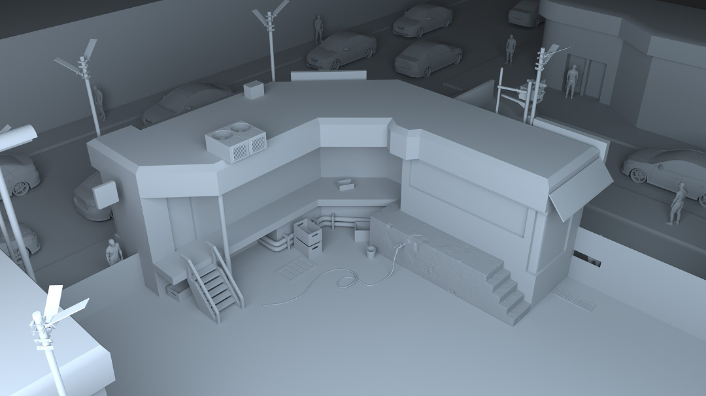

Cyberpunk alley
I have made all of this except the car and the man. These both models come from Turbosquid.
Trying to test the light poles I started to shade theim a lot using the Romain Chauliac's scipt ShadeIt. You can see the result underneath.

This gave me the idea to impove this work to test nPaticles, one of the maya tool to manage particles.

The continuation of this can be seen in this tab
(Work In Progress)